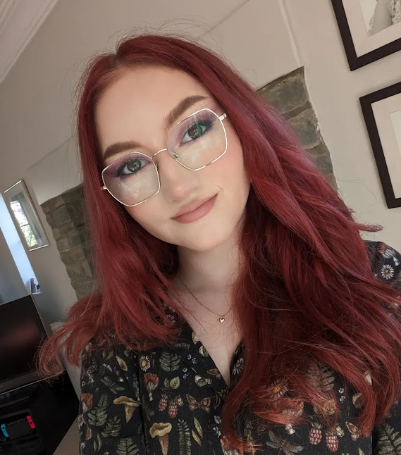

About Me
Previous Experience
- Clickstart Course
- - 8 Week Digital Skills course with Bath Spa, Bath College and Catch22. Modules included Digital Marketing, SEO, UI/UX design and Web Development.
- University of Brighton
- - Began studying Computer Science for Games BSc in September 2023, left in January 2024 for personal reasons. Looked at some elements of web development and game development, including programming with C++ and HTML.
- Barnardo's Volunteering
- - During my free time, I volunteer at my local charity shop, where I have gained experience talking to customers and using a till.
- Bath Rugby Bar Work
- - Casual bartending on match days at Bath Rugby, usually work in a small team to serve customers, including till work and adapting to level of demand throughout shift.